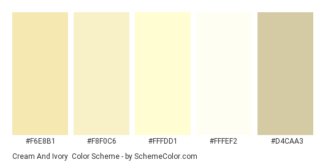

The website will be intended to show easy recipes that beginning cooks can use to master the art of cooking
The intended audience for this website are for any beginniners that want to start learning how to cook and don't want to consume too much of their time
The overall color of the website will have a cream color based background color and very simple text.
These are the following websites that this website will take inspiration from:
The website is going to have 4 sections catering towards different forms of cuisine i.e. Asian, Italian etc. There will be one main page that displays the overall message of the website and when the user scroll down they can see the different cuisines offered. These will contain a main image and will allow the user to click onto different sections according to their preference. Once they are in a particular section, a list will show up containing the list of foods that fall under that category and a link attached to the name that will allow the user to click into. Finally, the user will arrive at the specific page in which they will discover the list of steps to make that dish.